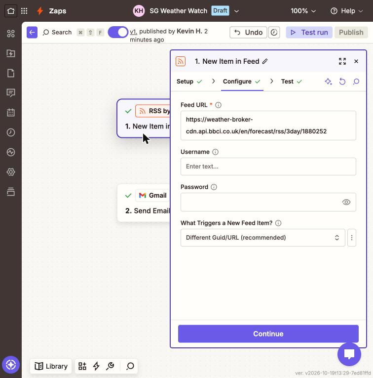
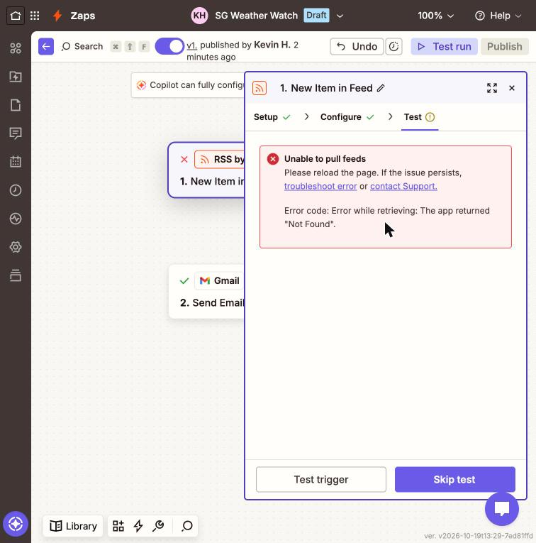
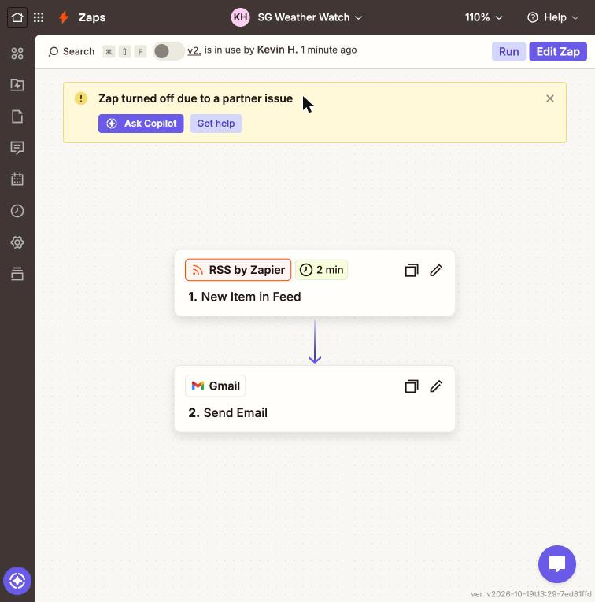
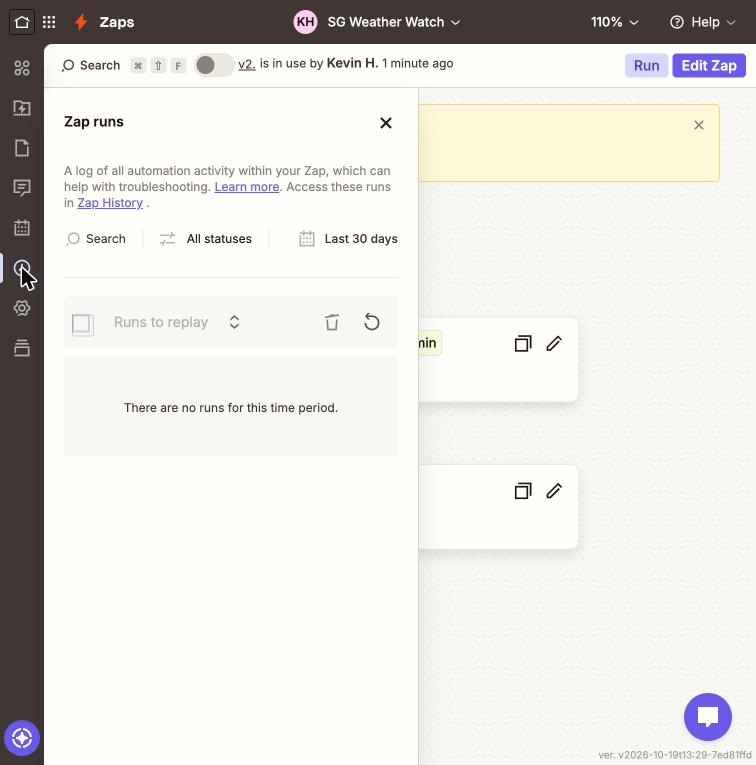
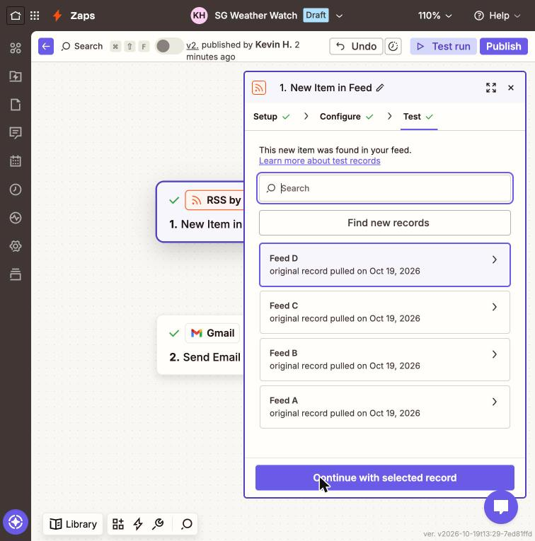

A Zapier agent with one trigger and one action. When BBC Weather posts a new Singapore forecast, it emails the forecast to me.
My agent card | SG Weather Watch | finished Mon 19 Oct 2026, 23:15 SGT 1. The job: Emails the latest Singapore weather forecast (sky, min/max temperature, humidity, wind, UV) to a student who commutes to SMU (me), each time BBC Weather updates it, so I know whether to carry an umbrella. 2. The trigger: RSS by Zapier "New Item in Feed" finds a new item in BBC Weather's 3-day Singapore feed (checked every 15 minutes on the free plan). 3. The tools: RSS by Zapier: New Item in Feed (reads the feed only). Gmail: Send Email (to me only). No other apps or actions. 4. It must never: email anyone but me. The Gmail "To" field is typed in as my own address, never mapped from the feed, and CC and BCC are left empty. 5. Where a person checks: I (the student) read each email when it arrives and check it against Zap history and the BBC Weather page every evening, until I turn the Zap off after class on Wed 21 Oct.
Published v1 at about 23:20 SGT on Mon 19 Oct. The trigger, set up against the live BBC feed:

I point the trigger at a BBC location that does not exist (ID 0000000 instead of Singapore's 1880252). This is what would happen if BBC moved or retired the feed. With a wrong ID, BBC answers "404 Not Found" and sends no RSS.



1880252, pressed "Find new records" to pull live records rather than trusting the cached sample, and published v3, which turned the Zap back on.
| Quadrant | A right answer? | Together or alone? | The person in the loop |
|---|---|---|---|
| A person leads, AI inside | A right answer | Must do it together | The person leads and AI works inside; the person signs off what AI has checked. |
| Agents run it, a person judges | No single right answer | Must do it together | Agents run the process, and a person judges inside it at the judgement points. |
| AI alone, with checks | A right answer | Either can do it alone | AI does it, with spot checks; a person reads its report or audits its log. |
| A person decides, AI alongside | No single right answer | Either can do it alone | A person decides with AI alongside, which drafts the options and checks the facts. |
AI alone, with checks (bottom left).
Work with a right answer. Every email can be checked against a source of truth: the forecast either matches BBC Weather's Singapore page at that time or it doesn't. The tricky case showed this too: with the wrong location ID there was a clear wrong answer (a 404), not a matter of taste. The setup test email showed this. Its subject, "Tonight: Thundery Showers, Minimum Temperature: 28°C (82°F)", matched word for word the BBC feed I fetched separately at 23:00 SGT, so I could mark it right without any judgement call.
Work that either of them can do alone. I could look up the forecast myself in a minute, and the Zap does it with no human step at all: one trigger, one action, no approval in between. Nothing in the job needs a person and AI working on the same item at once.
Where I stay at the gate: not before each email, but after. In my evening check I confirm the Zap is still on, compare each email with Zap history, and spot-check one forecast against bbc.co.uk/weather. What the agent may do alone: read one public feed and email one fixed address, mine. The Gmail "To" field is typed in, never mapped, so it cannot reach anyone else. What would move it: if it emailed classmates or clients, I would want to approve before sending, which moves it to A person leads, AI inside. If it advised on choices with no single right answer (for example "should we hold the outdoor event tomorrow?"), it moves to A person decides, AI alongside, with me making the call.
Our group's board (board.html) puts the closest task to mine, Stocks: pull daily closing prices, in AI alone, with checks, because it is "a fixed, checkable fact" that a script fetches with a spot check. I agree, and my agent belongs beside it. The group put its agent-style tasks (screening stocks for a watchlist, gathering sources for a literature review, tailoring a CV per job) in Agents run it, a person judges, because there is no single right list. I agree for those too.
Where I would answer differently is the together or alone question. The group answered it by asking whether a person must be inside each run. My tricky case shows that "alone" still needs a person outside the run: when the feed broke, the agent could not notice, Zap history logged nothing, and only Zapier's own alert email told me. So I keep my agent in "alone", but I'd add that "alone" agents need a named person who checks they are still running, not only that their output is right. I would also split the classmates' agents by the right answer question. A weather or "email matches a search" alert has a right answer. A "morning headlines" digest that chooses which stories matter does not, which would move it towards the right-hand column.
| What I delegated to AI | I used Claude (in the Claude desktop app, driving my Chrome) to compare Zapier's free options for a Singapore weather agent, find a free weather feed (BBC Weather RSS), click through the Zap set-up, draft this page and the card, create the GitHub repo and deploy it on Vercel. I did the Google sign-in and approved each step myself. |
|---|---|
| What I checked, and how | I checked that the Zap has one trigger and one action and uses only free apps (RSS by Zapier, Gmail), with no card added. I made sure the Gmail "To" field is my own personal address, typed in rather than mapped, with CC and BCC empty. I compared the test email against the raw BBC feed. I confirmed the broken-URL case in the editor, in Zap runs and in Zapier's alert email. I checked the page and repo load without signing in. |
| One AI error I caught | The AI stamped my tricky-case expectation "23:35 SGT", but it was written at 23:23, before the 23:25 run. I caught it by comparing with the git commit times and corrected it, because a wrong stamp would have made the expectation look as if it came after the run. A second near-miss: the editor kept showing old cached Singapore records after I broke the URL, so the AI's first read was that the trigger still worked. Pressing "Find new records" showed the real 404. |
| Time and cost | About 45 minutes on Mon 19 Oct (23:00–23:45 SGT) for the build, tricky case, fix and page. The cost is $0: Zapier free plan (a Pro trial switched on, but I used only free-plan features), Vercel Hobby and GitHub Free, with no card added anywhere. |
My agent fitted the job well: fetching a checkable forecast from one public feed and emailing it only to me is narrow, rule-bound work that a one-trigger, one-action Zap can do alone. It failed where a quiet agent is weakest: when the feed broke, it neither emailed nor logged a run, so silence looked the same as working, and only Zapier's own alert (and then the Zap turning off) gave it away. Next time I would add a regular "still alive" check, for example a weekly scheduled email that confirms the agent is on, and I would pick a feed that posts one item per update rather than three.